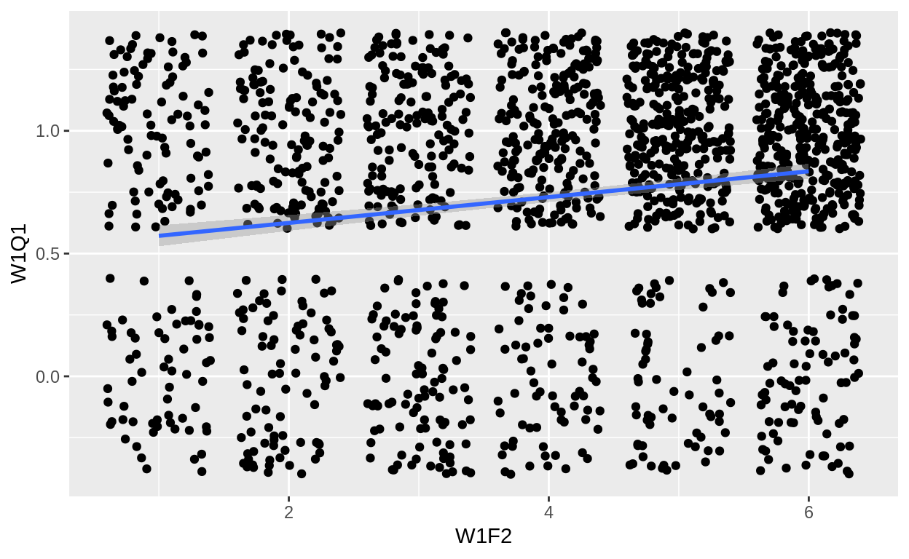
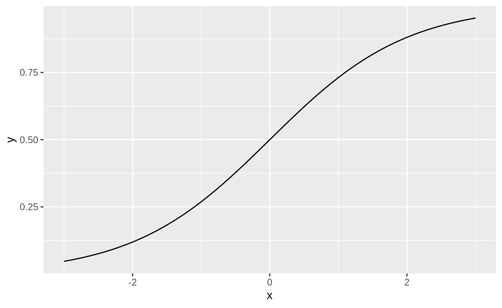
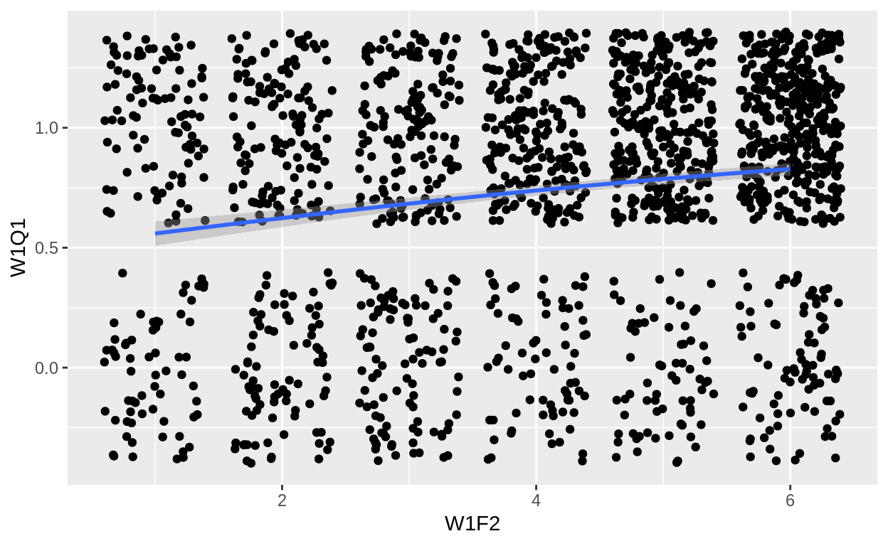

Rでロジスティック回帰を行う方法を説明します。
前回自民党の感情温度という一定の範囲内の値を取る数値を応答変数に持つ分析を行いました。 しかし、世の中のデータのすべてがこのように数値で表現できるとは限りません。
例えば「投票に行く（行かない）」や「投票した政党」のように数値化されていないデータをカテゴリカルデータ（変数）と呼びます。 このような場合を応答変数にする分析の場合は、「投票に行く確率」や「ある政党に投票する確率」を求めることで対処します。
以下では、応答変数の種類が2種類の場合と3以上の場合に分けて、カテゴリカルデータの分析をRで行う方法を紹介します。
library(tidyverse)
Registered S3 methods overwritten by 'ggplot2':
method from
[.quosures rlang
c.quosures rlang
print.quosures rlang
Registered S3 method overwritten by 'rvest':
method from
read_xml.response xml2
── Attaching packages ───────────────────────────────────────────────────────────────────────────────────────────────────────── tidyverse 1.2.1 ──
✔ ggplot2 3.1.1 ✔ purrr 0.3.2
✔ tibble 2.1.1 ✔ dplyr 0.8.0.1
✔ tidyr 0.8.3 ✔ stringr 1.4.0
✔ readr 1.3.1 ✔ forcats 0.4.0
── Conflicts ──────────────────────────────────────────────────────────────────────────────────────────────────────────── tidyverse_conflicts() ──
✖ dplyr::filter() masks stats::filter()
✖ dplyr::lag() masks stats::lag()多項ロジットを行うためのライブラリーを読み込みます。
library(nnet)東大・朝日共同調査の2014年衆院選・2016年参院選世論調査のデータを使います。
data <- read_csv("http://www.masaki.j.u-tokyo.ac.jp/utas/2014_2016UTASV20161004.csv",
locale = locale(encoding = "shift-jis"), na = c("66", "99", "999"))
Parsed with column specification:
cols(
.default = col_character(),
ID = col_double(),
PREFEC = col_double(),
HRDIST = col_double(),
W1Q1 = col_double(),
W1Q2 = col_double(),
W1Q3 = col_double(),
W1Q4 = col_double(),
W1Q5_1 = col_double(),
W1Q5_2 = col_double(),
W1Q5_3 = col_double(),
W1Q6 = col_double(),
W1Q7 = col_double(),
W1Q8 = col_double(),
W1Q9 = col_double(),
W1Q10 = col_double(),
W1Q11 = col_double(),
W1Q12 = col_double(),
W1Q13 = col_double(),
W1Q14_1 = col_double(),
W1Q14_2_1 = col_double()
# ... with 56 more columns
)
See spec(...) for full column specifications.
Warning: 8 parsing failures.
row col expected actual file
1810 PREFEC a double -- 'http://www.masaki.j.u-tokyo.ac.jp/utas/2014_2016UTASV20161004.csv'
1810 HRDIST a double -- 'http://www.masaki.j.u-tokyo.ac.jp/utas/2014_2016UTASV20161004.csv'
1811 PREFEC a double -- 'http://www.masaki.j.u-tokyo.ac.jp/utas/2014_2016UTASV20161004.csv'
1811 HRDIST a double -- 'http://www.masaki.j.u-tokyo.ac.jp/utas/2014_2016UTASV20161004.csv'
1812 PREFEC a double -- 'http://www.masaki.j.u-tokyo.ac.jp/utas/2014_2016UTASV20161004.csv'
.... ...... ........ ...... ...................................................................
See problems(...) for more details.66で、無回答は99なので、これらを欠損値として読み込んでおきます。なお、以下で特に断りのない限り、2014年の衆院選のデータを使います。
「投票に行く」あるいは「行かない」のように応答変数が2つの値のどちらかを取る場合を、まずは考えます。 選択肢は「投票に行く」か「行かない」しかないので、「投票に行く確率」を求めれば「投票に行かない確率」も分かる点に注意しましょう。
実は、最小二乗法をそのまま使うこともできます。 試しに投票率が年齢によって増えるかどうかを確認します。
data <- data %>%
mutate(W1Q1 = W1Q1 - 1)
model1 <- lm(W1Q1 ~ W1F2, data = data)
summary(model1)
Call:
lm(formula = W1Q1 ~ W1F2, data = data)
Residuals:
Min 1Q Median 3Q Max
-0.8350 -0.5721 0.2176 0.2701 0.4279
Coefficients:
Estimate Std. Error t value Pr(>|t|)
(Intercept) 0.519547 0.027322 19.016 <2e-16 ***
W1F2 0.052578 0.006227 8.444 <2e-16 ***
---
Signif. codes: 0 '***' 0.001 '**' 0.01 '*' 0.05 '.' 0.1 ' ' 1
Residual standard error: 0.4339 on 1791 degrees of freedom
(20 observations deleted due to missingness)
Multiple R-squared: 0.03828, Adjusted R-squared: 0.03775
F-statistic: 71.29 on 1 and 1791 DF, p-value: < 2.2e-1610歳増えるごとに投票率が5%上がることがわかります。
W1Q1は投票に行くと2、行かないと0なので、1を引いています。
data %>%
ggplot(aes(x = W1F2, y = W1Q1)) +
geom_jitter() +
geom_smooth(method = "lm")
Warning: Removed 20 rows containing non-finite values (stat_smooth).
Warning: Removed 20 rows containing missing values (geom_point).
線形確率モデルには良い点も悪い点もありますが、一般的にはロジスティック回帰（ロジット）を用いることが多いです。
大雑把に言うと、最小二乗法での式の右辺を
\[ y_i = \beta_0 + \beta_1 X_{i1} + \cdots \beta_m X_{im} + \varepsilon_i \]
ロジスティック関数あるいはシグモイド関数で変形します。」
\[ y_i = \frac{e^{\beta_0 + \beta_1 X_{i1} + \cdots \beta_m X_{im} + \varepsilon_i}}{1+e^{\beta_0 + \beta_1 X_{i1} + \cdots \beta_m X_{im} + \varepsilon_i}} \]
この操作により、\(y_i\)が0から1の間に収まるようになり、確率の定義に対応します。
tibble(x = seq(-3,3,by = 0.1),
y = plogis(x)) %>%
ggplot(aes(x = x, y = y)) +
geom_line()
アイデアは最小二乗法と変わりません。 予測値と観測値のズレを最小にするような\(\beta_{j}\)を求めるだけです。
専門的な言葉を使うと、機械学習ではクロスエントロピー誤差を最小化します。 計量経済学では、それを裏返して、対数尤度関数を最大化します。 表現は違えど、やっていることは同じです。
Rでロジスティック回帰をする場合、最小二乗法のときとそれほど変わりません。 おまじないは2つあり、1つ目はlm()の代わりにglm()を使うこと。 2つ目はfamily = binomial()というオプションをつけることです。
model2 <- glm(W1Q1 ~ W1F2, family = binomial(), data = data)
summary(model2)
Call:
glm(formula = W1Q1 ~ W1F2, family = binomial(), data = data)
Deviance Residuals:
Min 1Q Median 3Q Max
-1.8758 -1.2799 0.6931 0.7789 1.0783
Coefficients:
Estimate Std. Error z value Pr(>|z|)
(Intercept) -0.02881 0.13420 -0.215 0.83
W1F2 0.26653 0.03270 8.150 3.64e-16 ***
---
Signif. codes: 0 '***' 0.001 '**' 0.01 '*' 0.05 '.' 0.1 ' ' 1
(Dispersion parameter for binomial family taken to be 1)
Null deviance: 2079.3 on 1792 degrees of freedom
Residual deviance: 2011.4 on 1791 degrees of freedom
(20 observations deleted due to missingness)
AIC: 2015.4
Number of Fisher Scoring iterations: 4年齢とともに投票確率が上がるという結論は変わりませんが、線形確率モデルのときとは違い、10歳上がるごとに投票確率が20%上がるという解釈はできません。
data %>%
ggplot(aes(x = W1F2, y = ,W1Q1)) +
geom_jitter() +
geom_smooth(method = "glm", method.args = list(family = "binomial"))
Warning: Removed 20 rows containing non-finite values (stat_smooth).
Warning: Removed 20 rows containing missing values (geom_point).
もちろん、最小二乗法と同様、複数の説明変数を入れたり、多項式や交差項を含めることが可能です。
ロジスティック回帰の結果を使って、投票に行く確率をpredict()で予測できます。
predict(model2, type = "response") %>%
head()
1 2 3 4 5 6
0.6836879 0.5591515 0.7864781 0.6836879 0.6234566 0.8278338 それでは、予測結果をpredictという変数としてdata内に作成します。 また、予測結果は0から1の間の確率ですが、観測値は投票に行ったかどうかの0もしくは1なので、予測確率が0.5以上の場合は投票に行くと予測してvoteを1として上書きし、0.5以下であれば0とします。
data <- data %>%
drop_na(W1F2) %>%
mutate(predict = predict(model2, type = "response"),
vote = if_else(predict > 0.5, 1, 0))W1F2が欠損しているサンプルは分析で使われていないので除外します。type = "response"とすることで予測確率を計算します。予測精度を測る指標はいくつかありますが、ここではシンプルに正答率でいきたいと思います。 つまり、「実際に投票に行ったかどうか」と「投票に行ったかどうかの予測」が一致したサンプルの数を全体で割ったものを計算します。
sum(data$W1Q1 == data$vote)/nrow(data)
[1] 0.7334077年齢だけで70%以上の人々の投票行動を予測することができました。
せっかくなので、投票に行った人だけに限定して予測精度を確認してみます。
temp <- data %>%
filter(W1Q1 == 1)
sum(temp$W1Q1 == temp$vote)/nrow(temp)
[1] 1投票に行った人を100%の確率で的中していることがわかりました（投票に行った人はすべて投票に行くと予測された）。
続いて、「比例区でどの政党に投票したのか」という応答変数の取りうる値が3つ以上の場合を考えます。 やや複雑にはなりますが、「政党Aに投票する確率」を求めるという点では大きく変わりません。
細かい数学的な話は省きますが、シグモイド関数を拡張したソフトマックス関数で変形して、「\(i\)さんが\(j\)を選択する確率」を計算します。
\[ y_{ij} = \frac{e^{\beta_0 + \beta_{1k} X_{i1} + \cdots \beta_{mk} X_{im} + \varepsilon_i}}{\sum_j e^{\beta_0 + \beta_{1k} X_{i1} + \cdots \beta_{mk} X_{im} + \varepsilon_i}} \]
あとはクロスエントロピー誤差を最小化あるいは対数尤度関数を最大化して\(\beta_{jk}\)を求めます。
Rで多項ロジットをする場合、nnetやmlogitといったパッケージを利用します。 今回は簡単なnnetを使います（統計的仮説検定をしたい場合はmlogitの方が良さそうです）。
これまで1lm()やglm()だったところをmultinom()に変えるだけです。
model3 <- multinom(W1Q2 ~ W1F2, data = data)
# weights: 30 (18 variable)
initial value 3000.268376
iter 10 value 2533.512402
iter 20 value 2311.558503
iter 30 value 2308.152154
iter 30 value 2308.152145
iter 30 value 2308.152144
final value 2308.152144
converged
summary(model3)
Call:
multinom(formula = W1Q2 ~ W1F2, data = data)
Coefficients:
(Intercept) W1F2
2 -0.6219656 0.0001710116
3 -0.3370387 -0.1147746330
4 -0.9880643 -0.0256141963
5 -1.5240283 -0.3566910238
6 -1.0792824 -0.0044498016
7 -3.7177611 0.1418345680
8 -3.3173280 0.0433698085
9 -2.8774910 -0.3330421114
90 -1.8317165 -0.2799296451
Std. Errors:
(Intercept) W1F2
2 0.2338356 0.05061460
3 0.2331229 0.05234528
4 0.2714737 0.05926795
5 0.4653035 0.12169128
6 0.2755666 0.05973794
7 0.7554437 0.15504046
8 0.7022554 0.14935682
9 0.8614424 0.22409268
90 0.4961090 0.12377863
Residual Deviance: 4616.304
AIC: 4652.304 ロジットのときと同様、予測した結果と実際の投票先の的中率を求めてみます。 今回はpredict()で投票先をそのまま予測してくれるので、それをpartyという変数にします。
data <- data %>%
drop_na(W1Q2) %>%
mutate(party = predict(model3))
sum(data$W1Q2 == data$party)/nrow(data)
[1] 0.3499616的中率は35%でした。